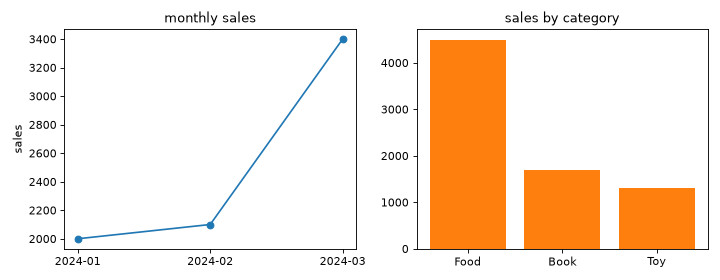

売上データの分析
日付・カテゴリ・売上額を持つデータから、月次の推移とカテゴリ別の内訳を集計し、グラフにまとめる例です。実務では pd.read_csv() で読み込むことが多い場面ですが、ここでは自己完結した例にするため、データを直接作成します。
データの準備
import numpy as np
import pandas as pd
df: pd.DataFrame = pd.DataFrame({
"date": pd.to_datetime([
"2024-01-05", "2024-01-20", "2024-02-10", "2024-02-15",
"2024-03-01", "2024-03-18", "2024-03-25",
]),
"category": ["Food", "Book", "Food", "Toy", "Book", "Food", "Toy"],
"sales": [1200, 800, 1500, 600, 900, 1800, 700],
})
print(df)
# date category sales
# 0 2024-01-05 Food 1200
# 1 2024-01-20 Book 800
# 2 2024-02-10 Food 1500
# 3 2024-02-15 Toy 600
# 4 2024-03-01 Book 900
# 5 2024-03-18 Food 1800
# 6 2024-03-25 Toy 700
月次・カテゴリ別の集計
date 列から年月を取り出し、月ごとの合計とカテゴリごとの合計をそれぞれ groupby で集計します。
df["month"] = df["date"].dt.to_period("M").astype(str)
# dt.to_period("M") で日付を「年月」の単位に変換する
monthly: pd.Series = df.groupby("month")["sales"].sum()
print(monthly)
# month
# 2024-01 2000
# 2024-02 2100
# 2024-03 3400
# Name: sales, dtype: int64
by_category: pd.Series = (
df.groupby("category")["sales"].sum().sort_values(ascending=False)
)
print(by_category)
# category
# Food 4500
# Book 1700
# Toy 1300
# Name: sales, dtype: int64
グラフとして可視化する
月次推移を折れ線グラフ、カテゴリ別の内訳を棒グラフにして、1 つの Figure に並べて表示します。
import numpy as np
import pandas as pd
import matplotlib.pyplot as plt
from matplotlib.axes import Axes
from matplotlib.figure import Figure
df: pd.DataFrame = pd.DataFrame({
"date": pd.to_datetime([
"2024-01-05", "2024-01-20", "2024-02-10", "2024-02-15",
"2024-03-01", "2024-03-18", "2024-03-25",
]),
"category": ["Food", "Book", "Food", "Toy", "Book", "Food", "Toy"],
"sales": [1200, 800, 1500, 600, 900, 1800, 700],
})
df["month"] = df["date"].dt.to_period("M").astype(str)
monthly: pd.Series = df.groupby("month")["sales"].sum()
by_category: pd.Series = (
df.groupby("category")["sales"].sum().sort_values(ascending=False)
)
fig: Figure
axes: np.ndarray
fig, axes = plt.subplots(nrows=1, ncols=2, figsize=(9, 3.5))
axes[0].plot(monthly.index, monthly.values, marker="o")
axes[0].set_title("monthly sales")
axes[0].set_ylabel("sales")
axes[1].bar(by_category.index, by_category.values, color="tab:orange")
axes[1].set_title("sales by category")
fig.tight_layout()



図として保存する
作成した Figure は、これまでの章と同じように fig.savefig() でファイルに保存できます。
fig.savefig("sales_report.png", dpi=200, bbox_inches="tight")